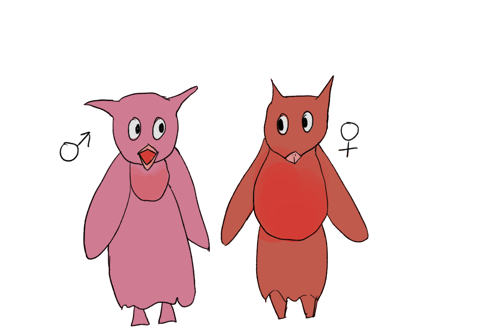

Avia
Heteromorphs speak Avia, whose name is derived from the Latin word root avis, meaning bird. Their complex syrinxes, which only males have, are replaced by a sac in their throat region. This sac keeps young warm during the harsh winters on their home planet.
Heteromorphs exhibit extreme sexual dimorphism. Females lack the vocal organs necessary to produce the complex Avia songs that males are able to make. Their only form of acknowledgement is tapping. Their species name comes from Greek ἕτερος (hetero), which means different, and μορφή (morph), which means shape or form.
